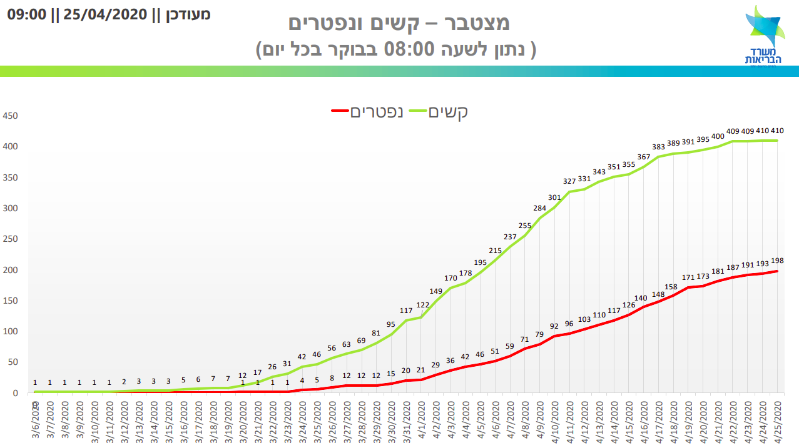

שיעור התמותה בטיפול נמרץ בישראל, כתוצאה מקורונה, 25.04.2020
היום פורסם המספר המצטבר של החולים הקשים לכל יום. נתונים אלו מאפשרים לנו להעריך מה הסיכוי להישרדות בטיפול נמרץ. מהגרף נראה שמספר הנפטרים הוא כמחצית ממספר המאושפזים במצב קשה. ראשית נצפה בגרף שפורסם, ובהמשך נראה נתונים מפורטים יותר מבריטניה

בבריטניה שיעור ההישרדות דומה
סקר עם מעל 4000 חולים במצב קשה הראה שכ- 51% מהחולים נפטרו. ההתפלגות לא הייתה אחידה. 65% מבין המונשמים נפטרו, אך מבין המקבלים תמיכה נשימתית קלה רק 18% נפטרו. באופן דומה, 22% מהמאושפזים מתחת לגיל 40 נפטרו, לעומת 68% לבני 70 ומעלה. השוואה למאושפזים מדלקת ריאות שלא נגרמה מקורונה מראה שבקרב בני 70 ומעלה שיעור התמותה הוא דומה. אבל סיכויי צעירים יותר לשרוד קורונה נמוכים יותר מדלקת ריאות רגילה
| Age | Died from COVID-19 |
Die from Pneumonia |
|---|---|---|
| _______ | __________ | __________ |
| 16-39 | 21.6% | 7.5% |
| 40-49 | 26.8% | 12.6% |
| 50-59 | 43.0% | 19.7% |
| 60-69 | 58.2% | 26.2% |
| 70-79 | 67.8% | 31.6% |
| 80+ | 68.7% | 31.5% |
השפעת המשקל על התמותה בטיפול נמרץ
ייתכן ובעלי משקל עודף יגיעו בסבירות גבוהה יותר לטיול נמרץ, כפי שדווח על ידי אנשי רפואה. אבל מהנתונים עולה שמרגע ההגעה לטיפול נמרץ, משקל גבוה מעלה את הסיכוי למות בחמישה אחוזים
| BMI | Died from COVID-19 |
Die from Pneumonia |
|---|---|---|
| _______ | __________ | __________ |
| <25 | 48.0% | 23.5% |
| 25-30 | 51.5% | 23.4% |
| 30-40 | 49.8% | 19.4% |
| 40+ | 52.6% | 15.3% |